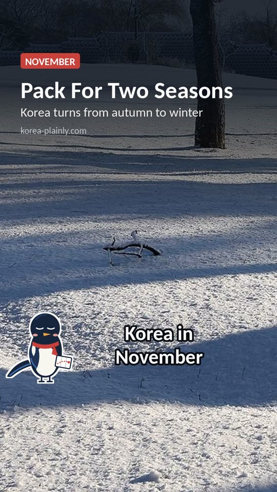

November is when Korea turns from autumn to winter. The month starts with crisp, sunny days and the last of the autumn leaves, and ends with cold mornings, bare trees and the first Christmas lights. It is quieter than October, flights and hotels are often cheaper, and the air is usually clear. Here is what to expect and how to make the most of it.

Watch the one-minute version
Subscribe for new videosWhat the weather is like
In Seoul, early November feels like a cool autumn: comfortable in the sun by day, cold in the morning and evening. By the end of the month, daytime temperatures are in single figures Celsius and nights can drop to freezing. Each cold spell makes the next week feel more like winter. Busan and the south coast are a few degrees milder, and Jeju is milder again but often windy.
Seoul in November
On average, Seoul has daytime highs of around 12°C and lows of around 3 to 4°C, but the month starts mild and ends close to freezing. It is fairly dry, with about 50 mm of rain in the month, and the first light snow can fall in late November.
Busan in November
Busan is milder, with average highs of about 16 to 17°C and lows of around 8°C. Rain is light and snow almost never falls, so it is a pleasant month for coastal walks and the beaches out of season.
Jeju in November
Jeju City is the mildest of the three, with average highs of about 16°C and lows of around 10°C. It is often windy and changeable, though, so a windproof layer matters more than a heavy coat. Our Jeju in winter guide covers the colder months.
These are Korea Meteorological Administration averages for 1991–2020; real weather changes from year to year, so check the forecast before you go. For a full checklist, see our Korea packing list.
Rain is light compared with summer, and many days are bright and dry. Days get short: by late November it is dark by about half past five in the afternoon, so plan outdoor sightseeing for the middle of the day. For the rest of the year, see our seasons and weather guide.
What to pack
- Layers. A T-shirt or thin top, a warm jumper or fleece and a proper jacket. You will take layers off in warm cafés and trains and put them back on outside.
- A warm coat for late November. If you are travelling in the second half of the month, bring a padded jacket, a hat and gloves.
- Comfortable walking shoes. Palace grounds, hiking trails and market streets are all done on foot.
- Lip balm and moisturiser. The air gets drier as heating comes on.
Things to do in November
Catch the last autumn leaves
In Seoul the colours usually peak from late October into early November, and the south of the country stays colourful a little longer. Palace gardens, Namsan and the university campuses are good places in the city. Our autumn foliage guide covers where and when.
Kimjang: kimchi-making season
Late autumn is kimjang, when families make a winter's worth of kimchi together. You will see huge piles of napa cabbages at markets, and some cooking classes and cultural centres run kimchi-making sessions for visitors at this time of year.
Festivals
- Busan Fireworks Festival: one of the biggest fireworks shows in Asia, over Gwangalli Beach. In 2026 it is planned for Saturday 7 November. Crowds are enormous, so arrive early or book a paid seat, and check the official site for the latest details. Our Busan one-day plan covers the east coast.
- Lantern displays and early Christmas lights: Seoul's lantern festival along Cheonggyecheon and the big department store light displays usually start from late autumn into winter. Dates change every year, so check before you go. Our festival calendar lists what is on.
Warm up the Korean way
As the evenings get colder, the street food stalls bring out hotteok (sweet filled pancakes), bungeoppang (fish-shaped buns) and fish cakes in hot broth. A spicy stew or a Korean bathhouse is the local way to warm up. See our street food guide and bathhouse guide.
Exam day: when Korea goes quiet
Once a year, on a Thursday in November, around half a million students sit the national university entrance exam, the suneung. In 2026 it falls on 19 November. On that day:
- Offices and the stock market start late, so the morning rush hour moves later.
- Police help students get to exam halls, and honking near schools is frowned upon.
- During the English listening test, flights are not allowed to take off or land anywhere in Korea for about half an hour, so some flights that day are rescheduled. If you are flying on 19 November, check your flight time with the airline.
Is November a good time to visit?
Yes, especially in the first half of the month: you get the end of the autumn colours with fewer crowds than October. The second half is colder and greyer but brings the first winter treats and early Christmas lights. For the peak of the festival season, see Korea in October. If you want snow and skiing, wait until December; see our Korea in December guide and winter guide.
FAQ
Is it cold in Korea in November?
It is cool at the start of the month and cold by the end, with nights near freezing in Seoul in late November. Pack layers and a warm jacket.
Are the autumn leaves still out in November?
In early November, yes, especially in Seoul's palaces and parks and in the south. By late November most trees are bare.
Does anything close for the suneung exam?
Most things stay open, but mornings start later and flights pause during the English listening test. Check flight times if you fly that day.
Is Jeju warmer than Seoul in November?
Yes. Jeju City averages around 16°C by day in November against around 12°C in Seoul, and its nights are much milder. It is windier, though, so it can feel cooler than the numbers suggest.